Warm-up Ride
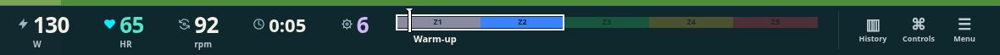
With a controller, only cooldowns and contextual triggers stay visible. Touch retains floating controls. Full bindings and physical maps live in start/pause help.
Design rules and validation · Interactive review

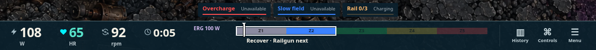
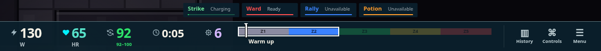
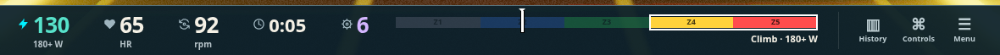
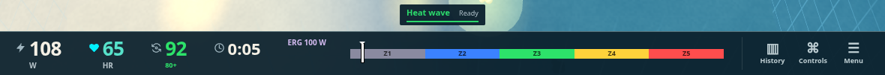
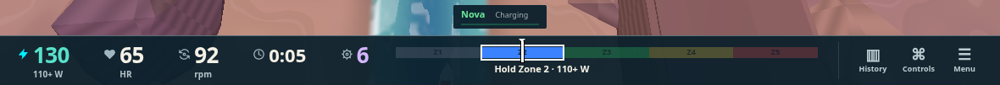
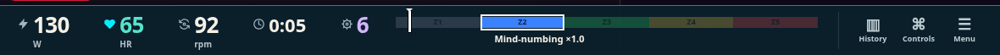
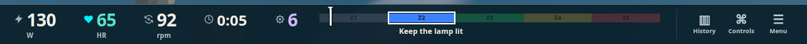
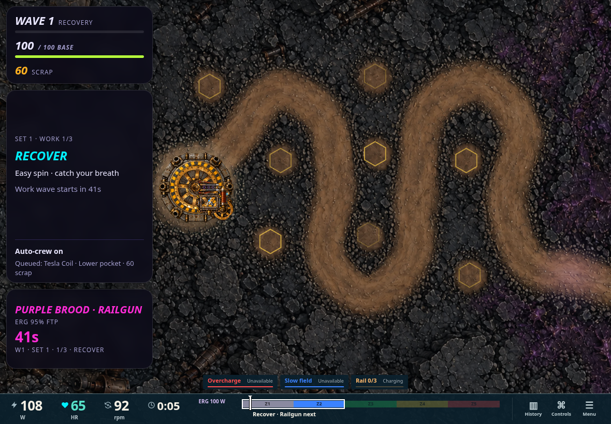
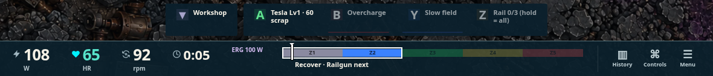
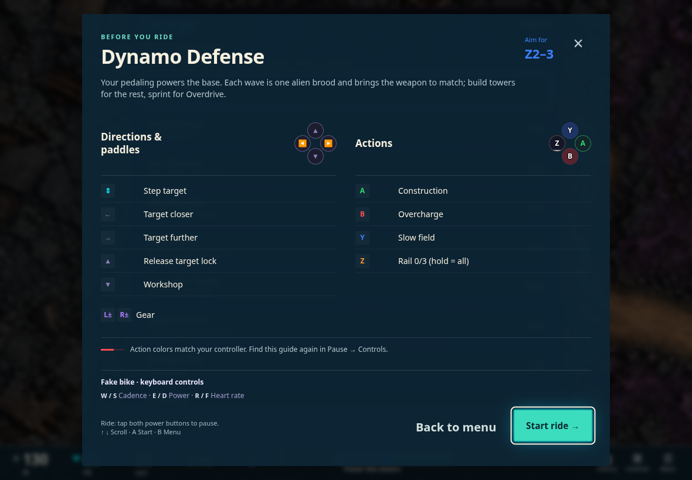